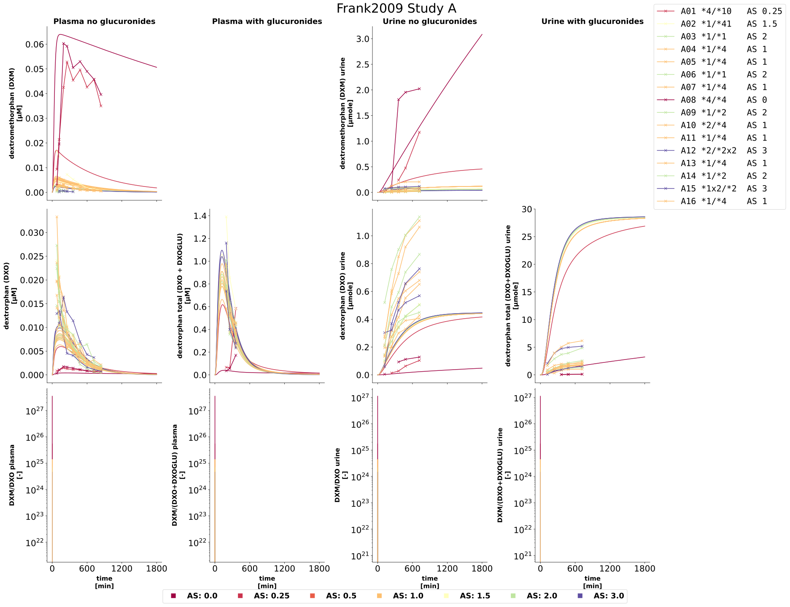
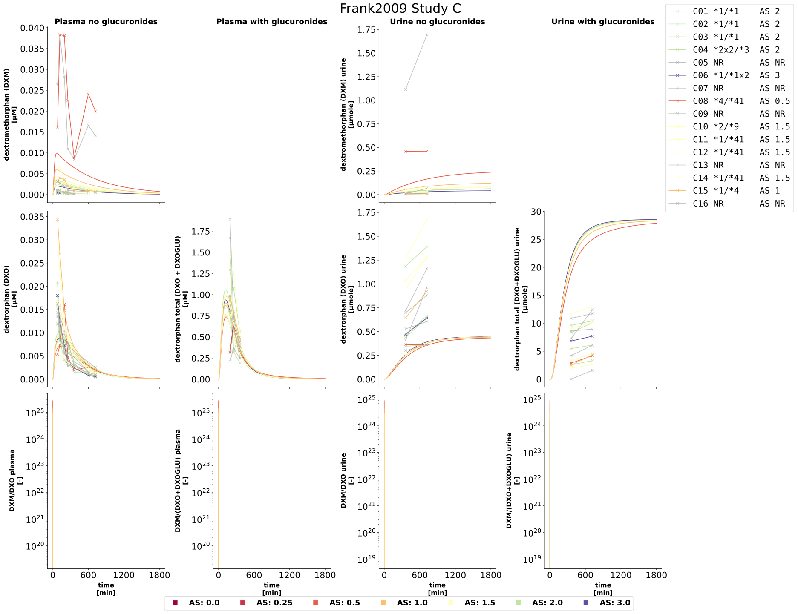
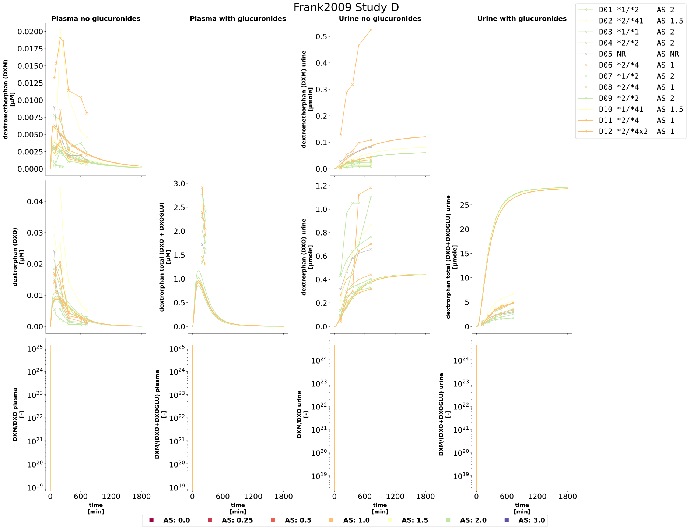
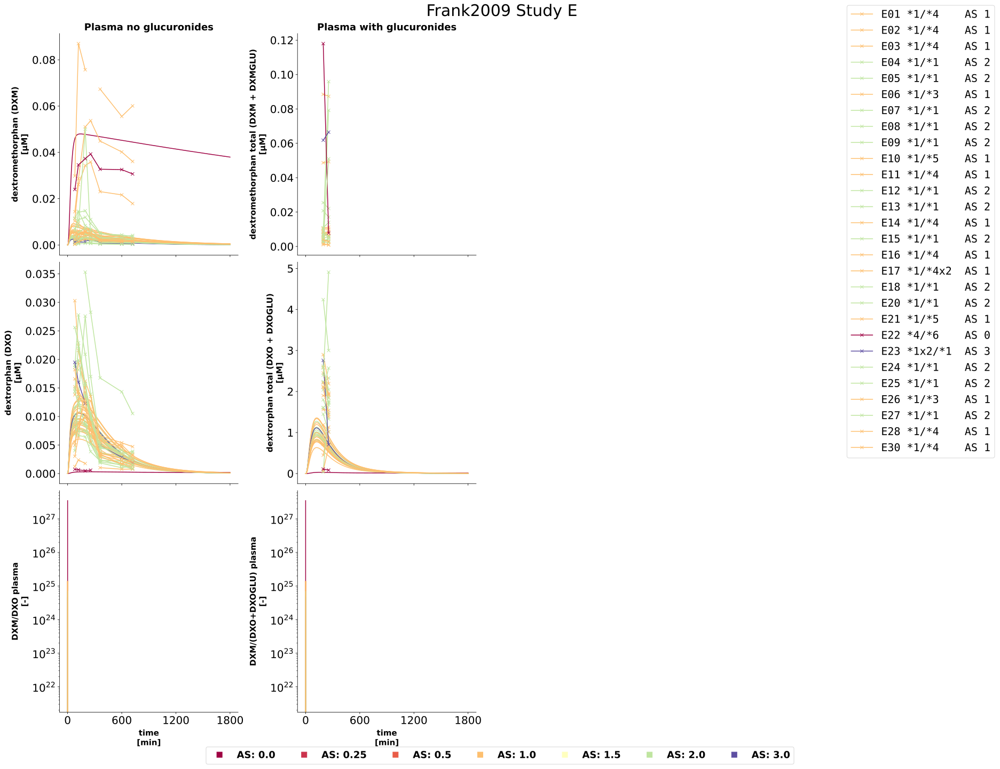

Overview
Models
| model | source |
|---|---|
| model | dextromethorphan_body_flat.xml |
Datasets
Figures (4)








Code
"""Simulation experiment of the study Frank2009."""
import logging
from typing import ClassVar, override
import matplotlib as mpl
import numpy as np
import pandas as pd
from matplotlib.artist import Artist
from matplotlib.axes import Axes
from matplotlib.lines import Line2D
from matplotlib.ticker import MultipleLocator
from pkpdsim.metadata import (
ApplicationForm,
Coadministration,
DataType,
Dosing,
Fasting,
Health,
PKPDData,
Route,
Tissue,
)
from pkpdsim.scan import point_band
from sbmlsim import Q
from sbmlsim.data import DataSet
from sbmlsim.fit import FitData, FitMapping
from sbmlsim.plot.serialization_matplotlib import FigureMPL
from sbmlsim.result import ScanResult
from sbmlsim.simulation import Simulation
from pkdb_models.models.dextromethorphan import MODEL
from pkdb_models.models.dextromethorphan.experiments.base_experiment import (
DexSimulationExperiment,
)
from pkdb_models.models.dextromethorphan.experiments.genotype_phenotype import (
GenotypeScoring,
GenotypeStyle,
)
from pkdb_models.models.dextromethorphan.fitting.mapping_collections import (
DexMappingMetaData,
)
from pkdb_models.models.dextromethorphan.utils_plotting import (
MPL_STYLE,
UNKNOWN_COLOR,
keep_tick_label_sizes,
)
logger = logging.getLogger(__name__)
class Frank2009(DexSimulationExperiment):
"""Simulation experiment of Frank2009 (thesis, five cocktail studies A-E).
30 mg dextromethorphan hydrobromide as one capsule (Hustenstiller
ratiopharm) with 150 ml water, part of a phenotyping cocktail with probe
doses (caffeine, digoxin, mephenytoin, midazolam, tolbutamide). The
individual plasma concentrations and urinary amounts of the reference
period (placebo) are mapped; the test periods (propiverine in A, an
undisclosed drug in B and C, lopinavir/ritonavir in D and E) are not.
- A: 16 healthy male non-smokers, food standardized.
- B: 12 healthy male caucasians, fasted 10 hr before to 6 hr after the
cocktail; not simulated (the undisclosed test drug is given before the
cocktail on the day of the reference period as well).
- C: 16 healthy male caucasian non-smokers, food standardized.
- D: 12 healthy male caucasian non-smokers, food standardized, blood and
urine to 12 hr.
- E: 30 HIV patients (male and female) on two nucleoside reverse
transcriptase inhibitors also in the reference period, no food until
2 hr after the cocktail, only the plasma is evaluated (the urine
collection was incomplete).
Every individual with a CYP2D6 genotype is simulated with its body weight
and the activity score of its diplotype (`TabIndividuals`); the individuals
without a genotype (C05, C07, C09, C13, C16, D05) have no simulation and
are only plotted. A09 and C16 are the same person (footnote f of Tab. 5),
C16 has no genotype and is not mapped, so the person is fitted once.
The urinary dextrorphan after deglucuronidation (Tab98, Tab134, Tab152) is
5 to 10 fold the free dextrorphan, against about 20 fold in the model and
25 to 55 % of a dose as conjugated dextrorphan in the literature: the
deglucuronidation of the thesis is incomplete (validation of a
limitation).
"""
gstyle: ClassVar[GenotypeStyle] = GenotypeStyle(activities=np.array([0, 3]))
font: ClassVar[dict[str, str | int]] = {"weight": "bold", "size": 18}
#: the tables of the fit mappings; study B is neither mapped nor plotted
mapping_info: ClassVar[dict[str, dict[str, str]]] = {
# Study A
"Tab83": {
"study": "A",
"tissue": "plasma",
"sheet": "Tab83",
"dataset_suffix": "",
"name": "dex",
"sim_key": "[Cve_dxm]",
},
"Tab85": {
"study": "A",
"tissue": "plasma",
"sheet": "Tab85",
"dataset_suffix": "",
"name": "dor",
"sim_key": "[Cve_dxo]",
},
"Tab90": {
"study": "A",
"tissue": "plasma",
"sheet": "Tab90",
"dataset_suffix": "_reference",
"name": "dxo_total",
"sim_key": "dxo_total",
},
"Tab93": {
"study": "A",
"tissue": "urine",
"sheet": "Tab93",
"dataset_suffix": "_reference",
"name": "dex",
"sim_key": "Aurine_dxm",
},
"Tab94": {
"study": "A",
"tissue": "urine",
"sheet": "Tab94",
"dataset_suffix": "_reference",
"name": "dor",
"sim_key": "Aurine_dxo",
},
"Tab98": {
"study": "A",
"tissue": "urine",
"sheet": "Tab98",
"dataset_suffix": "_reference",
"name": "dor_total",
"sim_key": "Aurine_dxo_total",
},
# Study C
"Tab119": {
"study": "C",
"tissue": "plasma",
"sheet": "Tab119",
"dataset_suffix": "",
"name": "dex",
"sim_key": "[Cve_dxm]",
},
"Tab121": {
"study": "C",
"tissue": "plasma",
"sheet": "Tab121",
"dataset_suffix": "",
"name": "dor",
"sim_key": "[Cve_dxo]",
},
"Tab126": {
"study": "C",
"tissue": "plasma",
"sheet": "Tab126",
"dataset_suffix": "_reference",
"name": "dxo_total",
"sim_key": "dxo_total",
},
"Tab129": {
"study": "C",
"tissue": "urine",
"sheet": "Tab129",
"dataset_suffix": "_reference",
"name": "dex",
"sim_key": "Aurine_dxm",
},
"Tab130": {
"study": "C",
"tissue": "urine",
"sheet": "Tab130",
"dataset_suffix": "_reference",
"name": "dor",
"sim_key": "Aurine_dxo",
},
"Tab134": {
"study": "C",
"tissue": "urine",
"sheet": "Tab134",
"dataset_suffix": "_reference",
"name": "dor_total",
"sim_key": "Aurine_dxo_total",
},
# Study D
"Tab137": {
"study": "D",
"tissue": "plasma",
"sheet": "Tab137",
"dataset_suffix": "",
"name": "dex",
"sim_key": "[Cve_dxm]",
},
"Tab139": {
"study": "D",
"tissue": "plasma",
"sheet": "Tab139",
"dataset_suffix": "",
"name": "dor",
"sim_key": "[Cve_dxo]",
},
"Tab144": {
"study": "D",
"tissue": "plasma",
"sheet": "Tab144",
"dataset_suffix": "_reference",
"name": "dxo_total",
"sim_key": "dxo_total",
},
"Tab147": {
"study": "D",
"tissue": "urine",
"sheet": "Tab147",
"dataset_suffix": "_reference",
"name": "dex",
"sim_key": "Aurine_dxm",
},
"Tab148": {
"study": "D",
"tissue": "urine",
"sheet": "Tab148",
"dataset_suffix": "_reference",
"name": "dor",
"sim_key": "Aurine_dxo",
},
"Tab152": {
"study": "D",
"tissue": "urine",
"sheet": "Tab152",
"dataset_suffix": "_reference",
"name": "dor_total",
"sim_key": "Aurine_dxo_total",
},
# Study E
"Tab155": {
"study": "E",
"tissue": "plasma",
"sheet": "Tab155",
"dataset_suffix": "",
"name": "dex",
"sim_key": "[Cve_dxm]",
},
"Tab157": {
"study": "E",
"tissue": "plasma",
"sheet": "Tab157",
"dataset_suffix": "",
"name": "dor",
"sim_key": "[Cve_dxo]",
},
"Tab162": {
"study": "E",
"tissue": "plasma",
"sheet": "Tab162",
"dataset_suffix": "_reference",
"name": "dxo_total",
"sim_key": "dxo_total",
},
}
activity_scores: ClassVar[list[float]] = [0.0, 0.25, 0.5, 1.0, 1.5, 2.0, 3.0]
#: the individuals of the studies A, C, D and E by study, set by `datasets`
individuals: dict[str, pd.DataFrame]
def make_individuals(self, sheet: str) -> pd.DataFrame:
"""Get the individuals of a table with their genotype, body weight and color.
The genotype and the body weight are those of `TabIndividuals`; an
individual without a genotype has no activity score (NaN).
Args:
sheet: id of the plasma table of a study, e.g. `Tab83`.
"""
df_ind = self.load_dataframe("TabIndividuals")
df_ind["name"] = df_ind["name"].str.strip()
df_ind["choice"] = df_ind["choice"].str.strip()
genotypes = df_ind[df_ind.measurement_type == "cyp2d6 genotype"].set_index(
"name"
)["choice"]
weights = df_ind[df_ind.measurement_type == "weight"].set_index("name")
assert set(weights["unit"]) == {"kg"}
individuals = []
df = self.load_dataframes_by_substance(sheet)["dextromethorphan"]
for individual in sorted(df["individual"].unique()):
genotype = str(genotypes[individual])
if genotype == "NR":
activity_score = np.nan
color = UNKNOWN_COLOR
else:
activity_score = GenotypeScoring.activity_score_for_diplotype(genotype)
color = self.gstyle.color(activity_score)
individuals.append(
{
"individual": individual,
"genotype": genotype,
"activity_score": activity_score,
"bodyweight": float(weights.loc[individual, "value"]),
"color": color,
}
)
return pd.DataFrame(individuals)
def genotyped(self, study: str) -> pd.DataFrame:
"""Get the individuals of a study with a genotype, which are simulated."""
df = self.individuals[study]
return df[df.genotype != "NR"]
@override
def datasets(self) -> dict[str, DataSet]:
self.individuals = {
"A": self.make_individuals("Tab83"),
"C": self.make_individuals("Tab119"),
"D": self.make_individuals("Tab137"),
"E": self.make_individuals("Tab155"),
}
dsets = {}
for fig_id in [
"Tab83", # study A
"Tab85", # study A
"Tab87", # study A
"Tab90", # study A
"Tab91", # study A
"Tab93", # study A
"Tab94", # study A
"Tab95", # study A
"Tab98", # study A
"Tab99", # study A
"Tab119", # study C
"Tab121", # study C
"Tab123", # study C
"Tab126", # study C
"Tab127", # study C
"Tab129", # study C
"Tab130", # study C
"Tab131", # study C
"Tab134", # study C
"Tab135", # study C
"Tab137", # study D
"Tab139", # study D
"Tab141", # study D
"Tab144", # study D
"Tab145", # study D
"Tab147", # study D
"Tab148", # study D
"Tab149", # study D
"Tab152", # study D
"Tab153", # study D
"Tab155", # study E
"Tab157", # study E
"Tab159", # study E
"Tab161", # study E
"Tab162", # study E
"Tab163", # study E
]:
df = self.load_dataframe(fig_id, na_values=["na"])
for label, dset_group in df.groupby("label"):
label = str(label)
if not dset_group.dropna(subset=["value"]).empty:
dset_group["value"] = dset_group["value"].astype("float")
dsets[self.to_sid(label)] = DataSet.from_df(dset_group, self.ureg)
else:
logger.warning("%s all empty.", label)
return dsets
@override
def simulations(self) -> dict[str, Simulation]:
tcsims = {}
changes = {
**self.default_changes(),
"PODOSE_dxm": Q(30, "mg") * self.f_dxmhbr_to_dxm(),
"LI__cyp2d6_allele1": Q(-1, "dimensionless"),
"LI__cyp2d6_allele2": Q(-1, "dimensionless"),
}
for study in self.individuals:
for _, individual in self.genotyped(study).iterrows():
tcsims[self.to_sid(f"ind_{individual.individual}")] = Simulation(
time_unit="hr",
end=30,
preinit_changes={
**changes,
"BW": Q(individual.bodyweight, "kg"),
"LI__cyp2d6_ac": Q(individual.activity_score, "dimensionless"),
},
)
return tcsims
def metadata(self, study: str, tissue: str, genotype: str) -> DexMappingMetaData:
"""Get the metadata of a mapping of an individual of a study."""
# study E: HIV patients on two nucleoside reverse transcriptase
# inhibitors in the reference period as well (no member HIV in
# `Health`), no food until 2 hr after the cocktail
hiv = study == "E"
return DexMappingMetaData(
diplotype=genotype,
tissue=Tissue(tissue),
genetic_phenotype=None,
metabolic_phenotype=None,
route=Route.PO,
application_form=ApplicationForm.CAPSULE,
dosing=Dosing.SINGLE,
health=Health.NR if hiv else Health.HEALTHY,
fasting=Fasting.FASTED if hiv else Fasting.NR,
coadministration=Coadministration.COMEDICATION
if hiv
else Coadministration.COCKTAIL,
data=PKPDData.PK,
data_type=DataType.INDIVIDUAL,
)
@override
def fit_mappings(self) -> dict[str, FitMapping]:
mappings = {}
for info in self.mapping_info.values():
for _, individual in self.genotyped(info["study"]).iterrows():
key = (
f"fm_frank2009_{info['study']}_{info['tissue']}_"
f"{info['name']}_{individual.individual}"
)
mappings[self.to_sid(key)] = FitMapping(
self,
reference=FitData(
self,
dataset=self.to_sid(
f"{info['sheet']}_{individual.individual}{info['dataset_suffix']}"
),
xid="time",
yid="value",
count="count",
),
observable=FitData(
self,
task=self.to_sid(f"task_ind_{individual.individual}"),
xid="time",
yid=info["sim_key"],
),
metadata=self.metadata(
study=info["study"],
tissue=info["tissue"],
genotype=individual.genotype,
),
)
return mappings
@override
def figures_mpl(self) -> dict[str, FigureMPL]:
# the style is read when the figures, their axes and texts are created
with mpl.rc_context(MPL_STYLE):
figures = {
**self.figure_study_a(),
**self.figure_study_c(),
**self.figure_study_d(),
**self.figure_study_e(),
}
for figure in figures.values():
keep_tick_label_sizes(figure)
return figures
def create_figure(self, study: str) -> tuple[FigureMPL, np.ndarray]:
"""Create the figure of a study with its 3 x 4 panels.
The rows are dextromethorphan, dextrorphan and their metabolic ratio, the
columns plasma and urine, each without and with the glucuronides.
Args:
study: the study, e.g. `A`.
"""
# created without `pyplot`, which would keep the figure in its registry
f = FigureMPL(figsize=(26, 20), layout="constrained")
axes = f.subplots(nrows=3, ncols=4, sharex=True, squeeze=False)
f.suptitle(f"Frank2009 Study {study}", fontsize=30)
return f, axes
def add_simulations(
self, axes: np.ndarray, study: str, urine: bool = True
) -> np.ndarray:
"""Add the simulations of the individuals of a study to the panels of a figure.
Args:
axes: the 3 x 4 panels of the figure.
study: the study, e.g. `A`.
urine: add the urine, which study E does not evaluate.
"""
def add_tc(ax: Axes, xres: ScanResult, key: str, unit: str, color: str) -> None:
"""Plot the timecourse of `key` in `unit`.
In a run over the draws of the fitted parameters the median of the
draws with the band of their quantiles, on the time points of the
figure; plotting the arrays of the draws drew a line per time point
across the draws, 200 MB of SVG per figure.
"""
factor = Q(1, xres.units[key]).to(unit).m
time_factor = Q(1, xres.units["time"]).to("min").m
if self.uncertainty is None:
ax.plot(
xres["time"].values * time_factor,
xres[key].values * factor,
color=color,
)
return
time, low, median, high = point_band(
xres, key, self.uncertainty.id, self.uncertainty.quantiles
)
ax.fill_between(
time * time_factor,
low * factor,
high * factor,
color=color,
alpha=0.2,
linewidth=0,
)
ax.plot(time * time_factor, median * factor, color=color)
for _, individual in self.genotyped(study).iterrows():
task_id = f"task_ind_{individual.individual}"
xres = self.results[self.to_sid(task_id)]
tc_color = individual.color
add_tc(axes[0, 0], xres, "[Cve_dxm]", self.unit_dxm, tc_color)
add_tc(axes[1, 0], xres, "[Cve_dxo]", self.unit_dxo, tc_color)
add_tc(axes[2, 0], xres, "dxm_dxo", self.unit_dimless, tc_color)
add_tc(axes[1, 1], xres, "dxo_total", self.unit_dxo, tc_color)
add_tc(axes[2, 1], xres, "dxm_dxo_total", self.unit_dimless, tc_color)
if not urine:
continue
add_tc(axes[0, 2], xres, "Aurine_dxm", self.unit_dxm_ur, tc_color)
add_tc(axes[1, 2], xres, "Aurine_dxo", self.unit_dxo_ur, tc_color)
add_tc(axes[2, 2], xres, "dxm_dxo_urine", self.unit_dimless, tc_color)
add_tc(
axes[1, 3], xres, "Aurine_dxo_total", self.unit_dxo_total_ur, tc_color
)
add_tc(axes[2, 3], xres, "dxm_dxo_total_urine", self.unit_dimless, tc_color)
return axes
def _add_data(
self, ax: Axes, dataset: str, unit: str, individual: pd.Series
) -> None:
"""Plot the dataset of an individual in `unit`, if the dataset exists."""
if self.to_sid(dataset) in self._datasets:
timecourse = self._datasets[self.to_sid(dataset)]
tc = Q(timecourse["value"], timecourse["value_unit"].unique()[0]).to(unit)
time = Q(timecourse["time"], timecourse["time_unit"].unique()[0]).to("min")
activity_score = (
"NR"
if np.isnan(individual.activity_score)
else f"{individual.activity_score:g}"
)
ax.plot(
time.m,
tc.m,
color=individual.color,
marker="x",
label=f"{individual.individual} {individual.genotype!s:<8} AS {activity_score}",
)
else:
logger.warning("%s is not in datasets.", dataset)
def add_study_a_data(self, axes: np.ndarray) -> np.ndarray:
"""Add the data of the individuals of study A to the panels of a figure."""
for _, individual in self.individuals["A"].iterrows():
self._add_data(
axes[0, 0], f"Tab83_{individual.individual}", self.unit_dxm, individual
)
self._add_data(
axes[1, 0], f"Tab85_{individual.individual}", self.unit_dxo, individual
)
self._add_data(
axes[2, 0],
f"Tab87_{individual.individual}",
self.unit_dimless,
individual,
)
self._add_data(
axes[1, 1],
f"Tab90_{individual.individual}_reference",
self.unit_dxo,
individual,
)
self._add_data(
axes[2, 1],
f"Tab91_{individual.individual}_reference",
self.unit_dimless,
individual,
)
self._add_data(
axes[0, 2],
f"Tab93_{individual.individual}_reference",
self.unit_dxm_ur,
individual,
)
self._add_data(
axes[1, 2],
f"Tab94_{individual.individual}_reference",
self.unit_dxo_ur,
individual,
)
self._add_data(
axes[2, 2],
f"Tab95_{individual.individual}_reference",
self.unit_dimless,
individual,
)
self._add_data(
axes[1, 3],
f"Tab98_{individual.individual}_reference",
self.unit_dxo_total_ur,
individual,
)
self._add_data(
axes[2, 3],
f"Tab99_{individual.individual}_reference",
self.unit_dimless,
individual,
)
return axes
def add_study_c_data(self, axes: np.ndarray) -> np.ndarray:
"""Add the data of the individuals of study C to the panels of a figure."""
for _, individual in self.individuals["C"].iterrows():
self._add_data(
axes[0, 0], f"Tab119_{individual.individual}", self.unit_dxm, individual
)
self._add_data(
axes[1, 0], f"Tab121_{individual.individual}", self.unit_dxo, individual
)
self._add_data(
axes[2, 0],
f"Tab123_{individual.individual}",
self.unit_dimless,
individual,
)
self._add_data(
axes[1, 1],
f"Tab126_{individual.individual}_reference",
self.unit_dxo,
individual,
)
self._add_data(
axes[2, 1],
f"Tab127_{individual.individual}_reference",
self.unit_dimless,
individual,
)
self._add_data(
axes[0, 2],
f"Tab129_{individual.individual}_reference",
self.unit_dxm_ur,
individual,
)
self._add_data(
axes[1, 2],
f"Tab130_{individual.individual}_reference",
self.unit_dxo_ur,
individual,
)
self._add_data(
axes[2, 2],
f"Tab131_{individual.individual}_reference",
self.unit_dimless,
individual,
)
self._add_data(
axes[1, 3],
f"Tab134_{individual.individual}_reference",
self.unit_dxo_total_ur,
individual,
)
self._add_data(
axes[2, 3],
f"Tab135_{individual.individual}_reference",
self.unit_dimless,
individual,
)
return axes
def add_study_d_data(self, axes: np.ndarray) -> np.ndarray:
"""Add the data of the individuals of study D to the panels of a figure."""
for _, individual in self.individuals["D"].iterrows():
self._add_data(
axes[0, 0], f"Tab137_{individual.individual}", self.unit_dxm, individual
)
self._add_data(
axes[1, 0], f"Tab139_{individual.individual}", self.unit_dxo, individual
)
self._add_data(
axes[2, 0],
f"Tab141_{individual.individual}",
self.unit_dimless,
individual,
)
self._add_data(
axes[1, 1],
f"Tab144_{individual.individual}_reference",
self.unit_dxo,
individual,
)
self._add_data(
axes[2, 1],
f"Tab145_{individual.individual}_reference",
self.unit_dimless,
individual,
)
self._add_data(
axes[0, 2],
f"Tab147_{individual.individual}_reference",
self.unit_dxm_ur,
individual,
)
self._add_data(
axes[1, 2],
f"Tab148_{individual.individual}_reference",
self.unit_dxo_ur,
individual,
)
self._add_data(
axes[2, 2],
f"Tab149_{individual.individual}_reference",
self.unit_dimless,
individual,
)
self._add_data(
axes[1, 3],
f"Tab152_{individual.individual}_reference",
self.unit_dxo_total_ur,
individual,
)
self._add_data(
axes[2, 3],
f"Tab153_{individual.individual}_reference",
self.unit_dimless,
individual,
)
return axes
def add_study_e_data(self, axes: np.ndarray) -> np.ndarray:
"""Add the data of the individuals of study E to the panels of a figure."""
for _, individual in self.individuals["E"].iterrows():
self._add_data(
axes[0, 0], f"Tab155_{individual.individual}", self.unit_dxm, individual
)
self._add_data(
axes[1, 0], f"Tab157_{individual.individual}", self.unit_dxo, individual
)
self._add_data(
axes[2, 0],
f"Tab159_{individual.individual}",
self.unit_dimless,
individual,
)
self._add_data(
axes[0, 1],
f"Tab161_{individual.individual}_reference",
self.unit_dxm,
individual,
)
self._add_data(
axes[1, 1],
f"Tab162_{individual.individual}_reference",
self.unit_dxo,
individual,
)
self._add_data(
axes[2, 1],
f"Tab163_{individual.individual}_reference",
self.unit_dimless,
individual,
)
return axes
def layout_figure(
self, f: FigureMPL, axes: np.ndarray, dex_glu: bool = False
) -> None:
"""Set the titles, labels, scales and legends of a figure.
The legends of the activity scores (below the panels) and of the
individuals (right of the panels) are legends of the figure, so they
do not cover a panel.
Args:
f: the figure.
axes: the 3 x 4 panels of the figure.
dex_glu: show the panel of dextromethorphan with glucuronides, which
only study E has.
"""
def label(name: str, unit: str) -> str:
"""Label of an axis with its unit, `[-]` for dimensionless."""
unit = "-" if unit == self.unit_dimless else unit
return f"{name.strip()}\n[{unit}]"
for ax, title in zip(
axes[0, :],
[
"Plasma no glucuronides",
"Plasma with glucuronides",
"Urine no glucuronides",
"Urine with glucuronides",
],
strict=True,
):
ax.set_title(title, fontdict=self.font)
# dextromethorphan with glucuronides is not simulated, only study E has
# data of it in plasma and no study in urine: the panels stay empty
if not dex_glu:
axes[0, 1].axis("off")
axes[0, 3].axis("off")
axes[0, 0].set_ylabel(label(self.label_dxm, self.unit_dxm))
axes[1, 0].set_ylabel(label(self.label_dxo, self.unit_dxo))
axes[2, 0].set_ylabel(label(self.label_mr_plasma, self.unit_dimless))
axes[0, 1].set_ylabel(
label("dextromethorphan total (DXM + DXMGLU)", self.unit_dxm)
)
axes[1, 1].set_ylabel(label(self.label_dxo_total, self.unit_dxo))
axes[2, 1].set_ylabel(label(self.label_mrtot_plasma, self.unit_dimless))
axes[0, 2].set_ylabel(label(self.label_dxm_ur, self.unit_dxm_ur))
axes[1, 2].set_ylabel(label(self.label_dxo_ur, self.unit_dxo_ur))
axes[2, 2].set_ylabel(label(self.label_mr_urine, self.unit_dimless))
axes[1, 3].set_ylabel(label(self.label_dxo_total_ur, self.unit_dxo_total_ur))
axes[2, 3].set_ylabel(label(self.label_mrtot_urine, self.unit_dimless))
for ax in axes[2, :]:
ax.set_yscale("log")
ax.set_xlabel(label(self.label_time, "min"))
# the axes share the time: a tick every 10 hr
axes[2, 0].xaxis.set_major_locator(MultipleLocator(600))
# activity scores of the simulations
f.legend(
[
Line2D(
[0],
[0],
markerfacecolor=self.gstyle.color(activity_score),
marker="s",
color=self.gstyle.color(activity_score),
markersize=10,
lw=0,
)
for activity_score in self.activity_scores
],
[f"AS: {activity_score}" for activity_score in self.activity_scores],
prop=self.font,
loc="outside lower center",
ncol=len(self.activity_scores),
)
# individuals of the data, every individual once
individuals: dict[str, Artist] = {}
for ax in axes.flat:
for handle, ind_label in zip(*ax.get_legend_handles_labels(), strict=True):
individuals.setdefault(ind_label, handle)
if individuals:
f.legend(
list(individuals.values()),
list(individuals.keys()),
loc="outside right upper",
prop={"family": "monospace"},
)
def figure_study_a(self) -> dict[str, FigureMPL]:
"""Figure of study A."""
f, axes = self.create_figure("A")
self.add_simulations(axes, study="A")
self.add_study_a_data(axes)
self.layout_figure(f, axes)
return {"fig_study_a": f}
def figure_study_c(self) -> dict[str, FigureMPL]:
"""Figure of study C."""
f, axes = self.create_figure("C")
self.add_simulations(axes, study="C")
self.add_study_c_data(axes)
self.layout_figure(f, axes)
return {"fig_study_c": f}
def figure_study_d(self) -> dict[str, FigureMPL]:
"""Figure of study D."""
f, axes = self.create_figure("D")
self.add_simulations(axes, study="D")
self.add_study_d_data(axes)
self.layout_figure(f, axes)
return {"fig_study_d": f}
def figure_study_e(self) -> dict[str, FigureMPL]:
"""Figure of study E."""
f, axes = self.create_figure("E")
self.add_simulations(axes, study="E", urine=False)
self.add_study_e_data(axes)
self.layout_figure(f, axes, dex_glu=True)
# the urine of study E is not evaluated (incomplete collection)
for ax in axes[:, 2:].flat:
ax.set_title("")
ax.axis("off")
return {"fig_study_e": f}
if __name__ == "__main__":
MODEL.run_experiments(Frank2009, output_dir="test", save_results=True)